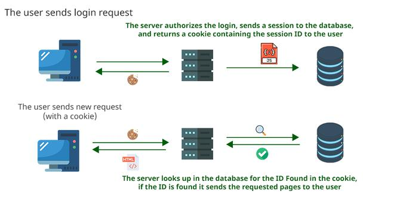

Гайд по Авторизации: Сессии

Авторизация и аутентификация — основа любого современного веб-приложения. Если ваш сайт или API помнит пользователя между запросами — скорее всего, там используются либо сессии, либо JWT-токены. В этом гайде мы подробно разберем, как работает аутентификация на основе сессий (session-based authentication), где хранятся данные, как тестировать этот механизм и что спрашивают на собеседованиях.
Что такое сессия?
В контексте веба, сессия — это полупостоянное соединение между двумя устройствами (клиентом и сервером). Сессия начинается, когда пользователь входит в систему, и заканчивается, когда он выходит из системы или закрывает браузер.
Главная задача сессии — сохранять состояние между HTTP-запросами. Так как HTTP — это протокол без состояния (stateless), каждый запрос "не помнит" предыдущий. Сессии решают эту проблему.
Ключевые концепции
Чтобы понимать, как работают сессии, нужно разобраться с тремя основными понятиями:
- Session ID (Идентификатор сессии): Уникальная строка, которую сервер создает при первом входе пользователя. Этот ID клиент отправляет на сервер с каждым запросом, чтобы сервер "узнал" пользователя.
- Хранилище сессий (Session Store): Место на сервере (или отдельном сервисе вроде Redis/Memcached), где хранятся данные сессии: корзина покупок, ID пользователя, права доступа и т.д.
- Cookie (Куки): Самый распространенный способ хранения Session ID на стороне клиента. Браузер автоматически прикрепляет Cookie к каждому запросу на домен.
- Аутентификация vs Авторизация:
- Аутентификация — проверка, что пользователь — это тот, за кого себя выдает (логин/пароль).
- Авторизация — проверка, что у пользователя есть права на действие (например, может ли он удалить пост).
Схема работы (Step-by-Step)
Процесс сессионной аутентификации выглядит так:
- Клиент (браузер) отправляет POST-запрос на сервер с логином и паролем (например, на
/login). - Сервер проверяет логин и пароль в базе данных. Если данные верны:
- Сервер создает уникальный Session ID (например, длинную случайную строку:
abc123...). - Сервер сохраняет этот Session ID в хранилище сессий (в оперативной памяти, базе данных или Redis) и привязывает к нему данные пользователя (например,
user_id: 42,role: admin).
- Сервер создает уникальный Session ID (например, длинную случайную строку:
- Сервер отправляет ответ клиенту с заголовком
Set-Cookie. В этом заголовке указывается Session ID.Set-Cookie: sessionid=abc123...; HttpOnly; Secure; SameSite=Lax - Браузер получает ответ, видит
Set-Cookieи сохраняет эту куку в своем хранилище. - При следующем запросе к этому же сайту (например, переходе в личный кабинет), браузер автоматически добавляет заголовок
Cookieко всем запросам.Cookie: sessionid=abc123... - Сервер получает запрос, достает Session ID из заголовка Cookie, ищет его в хранилище сессий.
- Если сессия найдена и не истекла, сервер понимает, что это пользователь
user_id: 42. - Сервер выполняет запрос (отдает данные личного кабинета) и отправляет ответ клиенту.
- Если сессия найдена и не истекла, сервер понимает, что это пользователь
Способы хранения сессий на сервере
Выбор хранилища критически важен для масштабирования приложения.
| Тип хранилища | Описание | Плюсы | Минусы |
|---|---|---|---|
| In-Memory (память процесса) | Сессии хранятся прямо в памяти серверного приложения. | Самый быстрый способ. Проще всего для разработки. | Не масштабируется. Если серверов несколько (кластер), у каждого будет своя память. Пользователь попадет на другой сервер — сессия потеряется. |
| База данных (SQL/NoSQL) | Сессии хранятся в таблице БД. | Централизованное хранение. Подходит для кластеров. | Медленнее, чем in-memory. Создает дополнительную нагрузку на БД. |
| Redis / Memcached | In-memory хранилища данных (key-value). | Идеальный баланс. Очень быстро (данные в RAM). Поддерживают кластеризацию. Легко удалять устаревшие сессии (TTL). | Требуется поднимать и администрировать отдельный сервис (Redis). |
Сравнение: Сессии vs JWT (JSON Web Tokens)
На собеседованиях часто просят сравнить эти два подхода.
| Критерий | Сессии | JWT (Токены) |
|---|---|---|
| Где хранятся данные | На сервере (в хранилище сессий). | В самом токене (на клиенте). |
| Состояние (State) | Stateful (сервер хранит состояние). | Stateless (сервер не хранит состояние, только ключ для подписи). |
| Масштабирование | Сложнее (нужно общее хранилище сессий: Redis). | Проще (любой сервер может проверить токен). |
| Инвалидация | Мгновенная (удалили сессию из БД — пользователь вышел). | Сложная (токен живет, пока не истечет, если не использовать "черный список"). |
| Размер | Маленький (в куке только ID). | Большой (токен содержит много данных). |
| Безопасность | Высокая (сессия не содержит данных, только ссылка). | Средняя (данные в токене, нужно подписывать и не хранить секреты). |
Тестирование сессионной авторизации (Для AQA)
Как тестировщику (автоматизатору) работать с сессиями?
-
Работа с Cookie в Postman:
- При отправке запроса на логин, Postman автоматически перехватит
Set-Cookieи сохранит их в менеджере кук (Cookies). - Последующие запросы к тому же домену будут автоматически отправлять эти куки. Это эмулирует работу браузера.
- При отправке запроса на логин, Postman автоматически перехватит
-
Работа с Cookie в Selenium/Playwright:
- Можно сохранить куки после логина и подкладывать их в новые сессии браузера, чтобы не логиниться перед каждым тестом.
# Пример для Playwright # Сохраняем состояние после логина context.storage_state(path="auth.json") # Используем сохраненное состояние в новом тесте browser.new_context(storage_state="auth.json")
- Можно сохранить куки после логина и подкладывать их в новые сессии браузера, чтобы не логиниться перед каждым тестом.
-
Что проверять:
- Отсутствие сессии: Запрос без куки на защищенный ресурс должен возвращать
401 Unauthorizedили302 Redirectна страницу логина. - Время жизни (Expires): Кука должна протухать через указанное время. Сессия на сервере тоже должна удаляться по TTL.
- Флаги безопасности:
HttpOnly(недоступно из JavaScript),Secure(только по HTTPS),SameSite(защита от CSRF). - Выход (Logout): После вызова
/logoutсессия на сервере должна удаляться, и старый Session ID больше не должен работать.
- Отсутствие сессии: Запрос без куки на защищенный ресурс должен возвращать
🚀 Разбор важных HTTP-заголовков
При работе с сессиями нужно знать эти заголовки:
Set-Cookie: Исходящий заголовок от сервера к клиенту. Инструктирует браузер сохранить куку.HttpOnly: Куку нельзя прочитать через JavaScript (защита от XSS-атак).Secure: Кука передается только по HTTPS.SameSite=Strict|Lax|None: Защита от CSRF-атак.Expires/Max-Age: Время жизни куки.
Cookie: Входящий заголовок от клиента к серверу. Содержит все куки, которые браузер должен отправить для этого домена.
❓ Вопросы с собеседований (ТОП-10)
Этот блок поможет вам подготовиться к собеседованию на позиции Manual/QA Automation и Junior/Middle Developer.
1. В чем разница между аутентификацией и авторизацией?
Ответ: Аутентификация (Authentication) отвечает на вопрос "Кто ты?". Это процесс проверки учетных данных (логин и пароль, биометрия). Авторизация (Authorization) отвечает на вопрос "Что тебе можно делать?". Это процесс проверки прав доступа (например, может ли пользователь с ролью "Гость" удалять товары в админке).
2. Как работает сессионная аутентификация?
Ответ:
1. Клиент шлет логин/пароль.
2. Сервер проверяет данные, создает уникальный Session ID и сохраняет его в своем хранилище.
3. Сервер отправляет клиенту Session ID через заголовок Set-Cookie.
4. Браузер автоматически прикрепляет этот ID в заголовке Cookie к каждому последующему запросу.
5. Сервер получает запрос, находит по ID данные сессии и понимает, что это за пользователь.
3. Что такое HTTP-only куки и зачем они нужны?
Ответ:
Это флаг, который устанавливается для Cookie (HttpOnly). Если он установлен, то JavaScript в браузере (например, вредоносный скрипт) не может прочитать или украсть эту куку. Это критически важная защита от XSS-атак (межсайтового скриптинга).
4. Сессии — это Stateful или Stateless? Почему?
Ответ: Сессии — это Stateful (состояние хранится на сервере). Потому что сервер хранит данные о пользователе (в памяти или Redis) и привязан к конкретному Session ID. Без этого хранилища сервер не сможет определить пользователя.
5. Какие проблемы возникают при использовании сессий в кластере серверов?
Ответ: Основная проблема — разделение состояния (shared state). Если пользователь залогинился на Сервере А, а его следующий запрос попал на Сервер Б, Сервер Б не узнает его, так как сессия хранится в памяти Сервера А. Решения: использовать "липкие сессии" (sticky sessions — плохо) или централизованное хранилище, например Redis (хорошо).
6. Как работает Logout при использовании сессий?
Ответ:
При выходе из системы клиент отправляет запрос на сервер (обычно POST /logout). Сервер должен удалить Session ID из своего хранилища. Браузер также может удалить куку, но главное — чтобы на сервере сессия перестала существовать. После этого даже если злоумышленник украдет старую куку, она не сработает.
7. В чем разница между session и cookie?
Ответ: Cookie — это место хранения данных на стороне клиента (браузера). Сессия — это абстракция, данные которой хранятся на сервере. В куке обычно лежит только Session ID (ключ доступа к данным сессии на сервере), а не сами данные пользователя. Не путайте: кука — это конверт, сессия — это содержимое письма в сейфе на сервере.
8. Что такое CSRF и как сессии защищаются от него?
Ответ:
CSRF (Cross-Site Request Forgery) — тип атаки, когда злоумышленник заставляет браузер жертвы отправить запрос на сайт, где жертва аутентифицирована. Защита с помощью сессий:
1. SameSite Cookie: Установка атрибута SameSite=Strict или Lax запрещает браузеру отправлять куку с кросс-доменными запросами.
2. CSRF-токены: Сервер вкладывает в формы уникальный токен, который проверяется при отправке.
9. Чем сессии лучше JWT, а чем хуже?
Ответ: Сессии лучше простотой инвалидации (можно сразу "выбить" пользователя) и безопасностью (чувствительные данные не покидают сервер). Сессии хуже тем, что они сложнее для горизонтального масштабирования (нужен общий Redis) и требуют больше ресурсов сервера для хранения состояния.
10. Как протестировать, что сессия не "залипает" и корректно протухает?
Ответ:
1. Залогиниться, зафиксировать время.
2. Подождать время, больше чем Max-Age (или Expires), указанное в куке.
3. Обновить страницу (или отправить запрос к API).
4. Ожидаемый результат: нас должно выкинуть на страницу логина или вернуться ошибка 401 Unauthorized. Также нужно проверить, что старая кука перестала работать даже вручную (через DevTools или Insomnia).
Заключение
Понимание сессий — это фундамент для работы с любым монолитным или классическим веб-приложением. В современных микросервисах чаще используется JWT, но сессии никуда не ушли и активно применяются там, где важна безопасность и контроль над пользовательскими данными в реальном времени. Освоив этот гайд, вы будете готовы к вопросам на собеседовании и сможете грамотно тестировать механизмы авторизации.